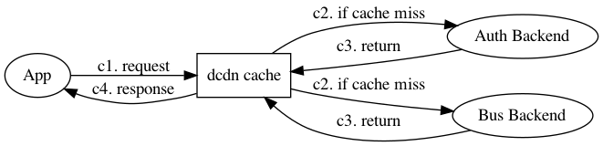
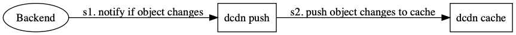

Dynamic CDN, design
Created at: 2020-07-06 Index
Notes
Current Content delivery networks
Traditional CDNs deliver static resources, such as images, css, js and video files, to the location where they are needed. The reason why CDN works is based on the factor that resources are immutable, their content need not be changed, if you want to make a change then just create another resource and switch the reference to the new one. the reference is usually a dynamic html page or an API called dynamic resource.
Using CDN can drastically reduce the load of original servers, make the website scale and extensible and inhance the experience of user interactions.
Dynamic resources cannot use CDN
Dynamic resources are exposed via APIs, they are managed by databases and may change at any time, therefore they cannot be delivered by CDN to outside world, current CDN services provide rather a dedicated network instead of real content delivery for dynamic ranges. The borden of original servers is not liberated.
Patterns show that Dynamic resources can be delivered too
Let's take the user authentication in distribute website environment for example.
A user named 'Alice' logins to a auth server, domained auth.example.com, to get an auth token, auth server generates an Auth object for this token, which include userid, username, profile fields and so on.
User Alice visits a content server using the auth token, once the content server get this token, it gets an Auth object from auth server using this token, if the Auth object is valid then user Alice is granted access to content server.
Every time when Alice visits the content server, the content server consults auth server for access checking and information, this is safe but may enlarge the roundtrip time and downgrade user experience.
How about content server maintains a cache of the Auth objects locally? The content server can accelerate user visits, in most cases this is sound since users' informations are seldom changed. However there is possibility when a user updates it's information at the auth server or is revoked accessibility by the auth server, the content server canot get notified in time, which leads to inconsistency and security leaks.
Need a notification system
When objects are deleted or updated, the users of them must get notified in time, or there will be unexpected behaviors. Thus a notification system should be set up to keep objects consistent eventually.
Dynamic CDN design
The DCDN has two components
K/V cache with backends

Like a normal kv cache system, DCDN has a local copy of objects, apps
can get objects using special keys. For example, a special key is
/auth/token/cb624a50 first part /auth/ is called section, the rest
token/cb624a50 is the reference of an object. the object it refers
to can be in any form of BLOBS including JSON.
If the cache by a key hits then objects mapped to it is returned
directly, else the key is deligated to a HTTP backend, ie,
https://auth.example.com/token/cb624a50, and when the result comes,
the DCDN cache it locally and returns to users.
A backend is a normal HTTP server, when it is called by a GET request, the valid response is any BLOB data, usually JSON format is used, In order to make the data sound, two HTTP response headers are required, examples are
- X-DCDN-Action: set, the choices are 'set|purge'.
- X-DCDN-Expiration: 100, expire after 100 seconds, the default expiration value is 3600 seconds.
If the header X-DCDN-Action is purge, then the response payload is ignored and the local cache of kv cache is purged.
The basic gRPC service is defined as
service Cache { rpc Get(GetRequest) returns (GetResponse); rpc MultiGet(MultiGetRequest) returns (MultiGetResponse); // Get multi objects in parallel. } message GetRequest { string key = 1; } message GetResponse { string key = 1; bool found = 2; bytes data = 3; // if found is false then data is empty blob } // TODO: MultiGet
Push streams

Once an object is changed at a backend, users of it must be get notified, so the backend send the changed object to the hub service via Add(). The backend can tell cache servers to set the new updated value or purge it directly, the later action may drastically reduce the traffics.
service Hub { rpc Watch(WatchRequest) returns (stream ObjectEntity); rpc Add(AddRequest) returns (AddResponse); // Add an object entity } message WatchRequest { string cursor = 1; // when the cursor is empty then the watcher // starts at the tail } message ObjectEntity { string cursor = 1; Object object = 2; } mesasge Object { string key = 1; enum Action { SET = 0; PURGE = 2; } Action action = 2; bytes data = 3; }